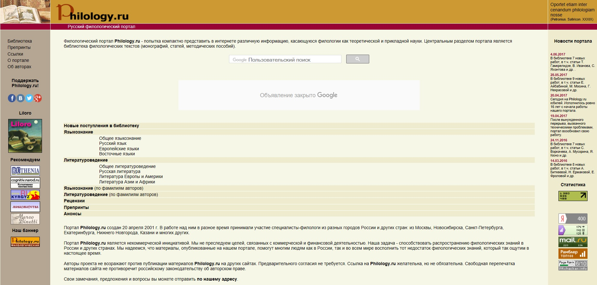
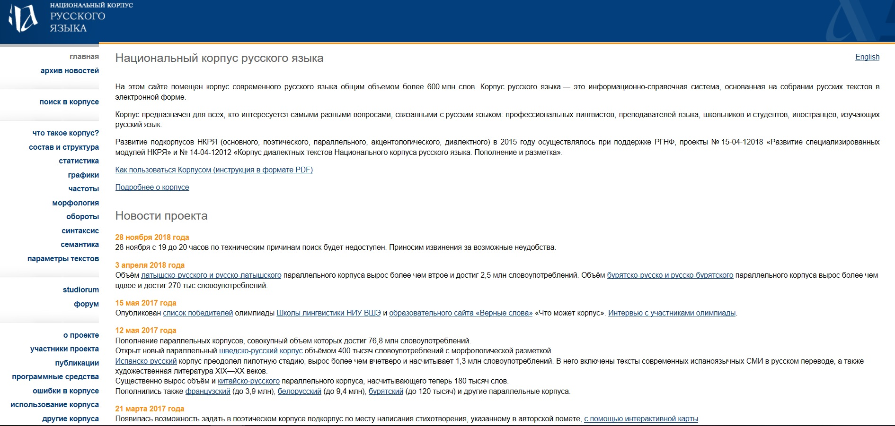

1. Русский филологический портал
Первое, что видит пользователь, заходя на главную страницу - строку поиска. Важный элемент любого сайта, который часто очень трудно найти, помещен здесь в очень удачном месте. Чуть ниже располагается каталог научной библиотеки. Он разделен тематически на блоки "Языкознание" и "Литературоведение", также есть возможность поиска по авторам. Наиболее удобная, на мой взгляд, функция заключается в том, что названия текстов с фамилией автора идут списком, а переход на сам текст осуществляется одним движением мыши: нужно просто нажать на название, и вас автоматически перебросит на страницу с текстом. Информация о новостях портала расположена на главной странице, но не в центре, а в виде блока в правом верхнем углу. Мне кажется, это очень удобно, так как она не слишком востребованна, и не стоит загромождать ей большинство пространства. Однако никакой более подробной информации о самих новостях вы узнать не сможете: в блоке нет никаких ссылок. В таком случае функциональность и необходимость этого элемента ставится под вопрос. В левой части стартовой страницы находится меню сайта, а также ссылки на его профили в социальных сетях.  Моя оценка интерфейсу руссского филологического портала - 7/10В целом сайт очень понятный и удобный, с ним не нужно догло разбираться или привыкать к его устройству, вся необходимая информация уже находится на главной странице. Единственный серьёзный недостаток, который я вижу, - это дизайн. Создаётся впечатление, что с 2001 года, момента запуска сайта, его внешний вид не менялся, хотелось бы работать с более современным оформлением.
2. Национальный корпус русского языка
На главной странице посетителю предлагается ознакомиться с инструкцией по работе с корпусом в формате PDF. Впоследствии оказывается, что она состоит из 80 страниц, на прочтение которых большинство пользователей не захочет тратить время. Однако в разделе меню в левой части стартовой страницы есть поясняющий раздел "Состав и структура". Там дается краткая характеристика основных представленных корпусов со ссылками на них. Правда, не совсем очевидно, по какому принципу выделены отдельные пункты длинного списка меню и какую именно информацию вы получите, перейдя по ним. Далее практичсеки всю старотовую страницу занимают новости сайта; поиск по всему сайту отсутсвует, но есть строка, предназначенная для непосредственного поиска слов в корпусе. Несмотря на наличие поясняющих блоков, ориентироваться в параметрах поиска тоже довольно затруднительно. На странице с результатами поиска трудно найти раздел, в котором задаются параметры сортировки текста, он никак не выделен.
 Моя оценка интерфейсу национальному корпусу русского языка - 4/10Из-за огромного количества информации, содержащейся на портале, на нем очень тяжело свободно ориентироваться. На мой взгляд, разработчикам недостаточно хорошо удалось её структурировать: более сложный поиск по корпусу всё еще остаётся для меня загадкой. Дизайн сайта вполне хороший, но над интерфейсом в целом стоит еще поработать.